Unit 2 Module 2b
GEOG246-346
2026-08-24 Back to home
Source:vignettes/unit2-module2b.Rmd
unit2-module2b.RmdAlgebra, categorizing, and sampling
Let’s move on and look at some additional raster-based analyses. The next few sections depend on objects created in the previous sections (Unit 2 Module 2a). The code to recreate those is here:
library(geospaar)
chirps <- rast(system.file("extdata/chirps.tif", package = "geospaar"))
districts <- system.file("extdata/districts.geojson", package = "geospaar") %>% st_read %>% mutate(ID = 1:nrow(.))
chirpsz <- mask(x = chirps, mask = districts)
zamr <- rast(x = ext(districts), crs = crs(districts), res = 0.1)
values(zamr) <- 1:ncell(zamr)
zamr2 <- rast(x = ext(districts), crs = crs(districts), res = 0.25)
values(zamr2) <- 1:ncell(zamr2)
distsr <- rasterize(x = districts, y = zamr, field = "ID")
distsr_rs <- resample(x = distsr, y = chirpsz, method = "near") # match extent
farmers <- system.file("extdata/farmer_spatial.csv", package = "geospaar") %>%
read_csv
farmersr <- farmers %>%
distinct(uuid, .keep_all = TRUE) %>%
dplyr::select(x, y) %>%
mutate(count = 1) %>%
st_as_sf(coords = c("x", "y"), crs = 4326) %>%
rasterize(x = ., y = zamr2, field = "count", fun = sum) %>%
print()
#> class : SpatRaster
#> dimensions : 39, 47, 1 (nrow, ncol, nlyr)
#> resolution : 0.25, 0.25 (x, y)
#> extent : 21.99978, 33.74978, -18.0751, -8.325097 (xmin, xmax, ymin, ymax)
#> coord. ref. : lon/lat WGS 84 (EPSG:4326)
#> source(s) : memory
#> name : sum
#> min value : 1
#> max value : 168
roads <- st_read(system.file("extdata/roads.geojson", package = "geospaar"))Algebra and selection
We can do any number of raster calculations using basic mathematical expressions. Here are some very basic ones:
# Chunk 36
r1 <- chirpsz[[1]] / chirpsz[[2]]
r2 <- chirpsz[[1]] + chirpsz[[2]]
r3 <- chirpsz[[1]] - chirpsz[[2]]
r4 <- chirpsz[[1]] * chirpsz[[2]]
s <- c(r1, r2, r3, r4)
names(s) <- c("divide", "sum", "subtract", "multiply")
plot_noaxes(s)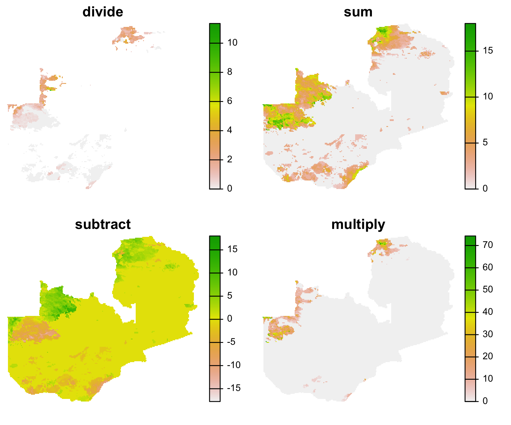
As you have seen in the previous section, we can also perform logical operations on rasters, selecting cells that meet certain criteria.
# Chunk 37
# #1
cv <- function(x, na.rm) {
cv <- sd(x, na.rm = na.rm) / mean(x, na.rm = na.rm) * 100
return(cv)
}
raintot <- app(chirpsz, fun = sum)
raincv <- app(chirpsz, fun = cv, na.rm = TRUE)
# #2
highrain_highcv <- raintot > 80 & raincv > 200
# #3
dist54 <- distsr_rs == 54 # a
distrain <- dist54 * raintot # b
distrain[dist54 == 0] <- NA # c
# distrain <- mask(raintot, dist54, maskvalue = 0) # d
# #4
meandistrain <- distrain > unlist(global(distrain, mean, na.rm = TRUE))
# #5
rain_gt_mu <- raintot > unlist(global(raintot, mean, na.rm = TRUE))
s <- c(raintot, raincv, highrain_highcv, distrain, meandistrain, rain_gt_mu)
titles <- c("Total rain", "Rain CV", "High rain, high CV", "Dist 54 rain",
"Dist 54 rain > mean", "Rain > mean")
plot_noaxes(s, main = titles) 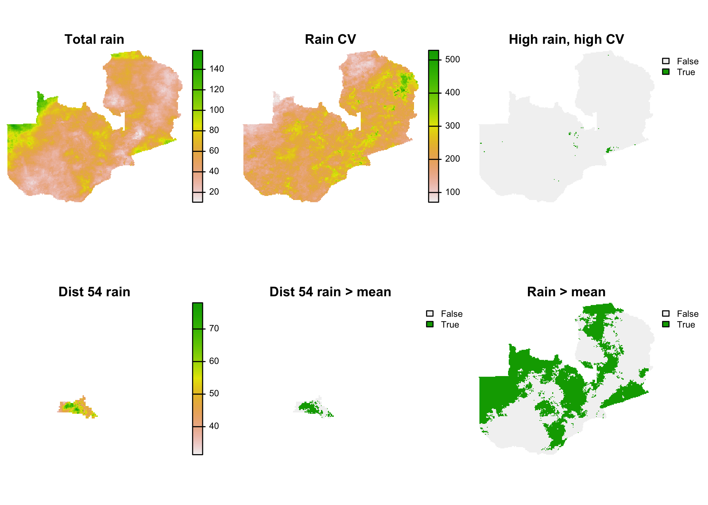
In #1, we use app to sum rainfall and calculate its CV
across the 28 days in chirpsz. Then, in #2, we identify
which cells have both high rainfall (>80 mm) and high rainfall
variability (CV > 200) during the 28 day time period.
In #3, we examine total rainfall within district 54. This is done in
several steps. First (line a), we create a mask, where cells in district
54 are 1, and everywhere else 0. Next (line b), we multiply this mask by
raintot, thereby masking out rainfall values outside the
district. At this point, if we calculated any subsequent statistics on
district 54 rainfall, they would be invalid because there would be a lot
of 0 values for rainfall outside of district 54 that would be included
in the calculation (run plot(distrain) right after line b
to see). This would result in a very low mean rainfall, for example.
Therefore, in line c, we identify the indices of the cells in
dist54 that have 0s (dist54 == 0), and use
those indices to set all the values in distrain to NA.
Lines b and c show the raster algebraic way of doing what could also be
achieved with mask, shown in the commented out line d.
Having made distrain safe for calculating statistics, in
#4 we then identify the areas in district 54 that received more rainfall
than the district mean (extracted using global, wihch
returns a data.frame with a single value, which we get by
unlisting) rainfall during the 28 days. In #5, we do the
same thing, but for all of Zambia.
Categorizing
Sometimes you will want to create a categorical raster from a continous one. We will look at two different ways of doing that.
Method 1:
# Chunk 38
qtiles <- global(raintot,
function(x) quantile(x, probs = seq(0, 1, 1/3), na.rm = TRUE))
raintotcut <- classify(x = raintot, rcl = unlist(qtiles), include.lowest = TRUE)
cols <- c("tan", "yellow3", "green4")
plot_noaxes(raintotcut, legend = FALSE, main = "Total Rainfall", col = cols,
mar = c(0, 0, 1, 0))
legend(x = "bottomright", legend = c("High", "Intermediate", "Low"),
pch = 15, pt.cex = 3, col = rev(cols), bty = "n")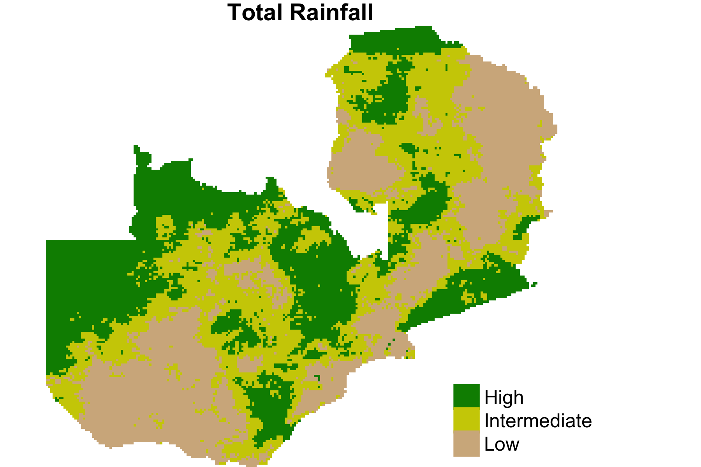
This approach using so-called cuts, perhaps the easiest
way of categorizing a continuous raster. This use the function
quantile, passed through an anonymous function in the
app function, to get the tercile values (i.e 33.3rd,
66.6th, and 100th percentiles) for raintot. The resulting
data.frame is vectorized, and these become cuts passed into
the rcl argument of terra::classify. We pass
the argument include.lowest = TRUE because we want to
include all values that are greater than or equal to the lowest value in
each category. Our plot of the results has a customized legend, which we
chose because we have a categorical raster and thus wanted a
categorical, rather than continuous (the default for
terra::plot, and thus plot_noaxes),
legend.
Method 2 is somewhat more involved:
# Chunk 39
rclmat <- cbind(unlist(qtiles[1:3]), unlist(qtiles[2:4]), 1:3)
rclmat
#> [,1] [,2] [,3]
#> X0. 10.39840 40.42806 1
#> X33.33333. 40.42806 55.41104 2
#> X66.66667. 55.41104 158.54463 3
raintotrcl <- classify(x = raintot, rcl = rclmat, include.lowest = TRUE)
plot_noaxes(raintotrcl, legend = FALSE, main = "Total Rainfall", col = cols,
mar = c(0, 0, 1, 0))
legend(x = "bottomright", legend = c("High", "Intermediate", "Low"),
pch = 15, pt.cex = 3, col = rev(cols), bty = "n") In the first step, we reuse the previously calculated terciles to create
a reclassification matrix (
In the first step, we reuse the previously calculated terciles to create
a reclassification matrix (rclmat). This matrix contains
the lower bound of the range of the category in column 1, the upper
bound in column 2, and then the new class value that will be assigned in
column 3. There are three rows, one per category. This matrix is passed
to the rcl argument of classify, in which we
also specify the same include.lowest = TRUE argument.
This approach requires slightly more work, but there are cases where you might need to use it, e.g. to reclassify another categorical raster using non-sequential categories.
Sampling
Many analyses use data sampled from a raster. For example, you might
have coordinates for places where you collected field data, and need to
collect rasterized environmental data for those locations. The
extract function is great for this.
Extract
From the description of extract, the function’s purpose
is to:
Extract values from a Raster* object at the locations of other spatial data. You can use coordinates (points), lines, polygons or an Extent (rectangle) object. You can also use cell numbers to extract values.
Here we will use points and polygons:
# Chunk 40
# #1
farmers_env <- farmers %>%
distinct(uuid, .keep_all = TRUE) %>%
dplyr::select(uuid, x, y) %>%
st_as_sf(coords = c("x", "y")) %>%
mutate(rain = terra::extract(x = raintot, y = .)[, 2]) %>%
mutate(district = terra::extract(x = distsr_rs, y = .)[, 2]) %>%
print
#> Simple feature collection with 793 features and 3 fields
#> geometry type: POINT
#> dimension: XY
#> bbox: xmin: 24.777 ymin: -18.222 xmax: 33.332 ymax: -8.997
#> CRS: NA
#> # A tibble: 793 x 4
#> uuid geometry rain district
#> * <chr> <POINT> <dbl> <dbl>
#> 1 009a8424 (27.256 -16.926) 66.9 11
#> 2 00df166f (26.942 -16.504) 72.0 11
#> 3 02671a00 (27.254 -16.914) 66.9 11
#> 4 03f4dcca (27.237 -16.733) 69.8 11
#> 5 042cf7b3 (27.138 -16.807) 75.1 11
#> 6 05618404 (26.875 -16.611) 66.1 11
#> 7 064beba0 (26.752 -16.862) 58.4 20
#> 8 083a46a2 (26.977 -16.765) 70.4 11
#> 9 08eb2224 (26.912 -16.248) 54.0 59
#> 10 0ab761d6 (27.113 -16.95) 72.4 11
#> # … with 783 more rows
# #2
farmdistid <- farmers_env %>%
drop_na %>%
distinct(district) %>%
pull
distrain <- districts %>%
filter(ID %in% farmdistid) %>%
terra::extract(x = raintot, y = ., fun = mean) %>%
rename(rain = sum) %>%
print
#> ID sum
#> 1 1 58.35027
#> 2 2 36.46143
#> 3 3 67.99078
#> 4 4 44.12176
#> 5 5 69.70491
#> 6 6 41.09122
#> 7 7 44.15476
#> 8 8 54.94505
#> 9 9 63.98032
#> 10 10 49.01939
#> 11 11 51.98236
#> 12 12 46.55391
#> 13 13 61.68815
#> 14 14 53.98820
#> 15 15 60.90310
# #3
rain_stats <- bind_rows(
farmers_env %>%
drop_na %>%
dplyr::select(rain) %>%
st_drop_geometry() %>%
mutate(dat = "Farmers"),
distrain %>%
dplyr::select(rain) %>%
mutate(dat = "Districts")
)
# #4
bp_theme <- theme(legend.title = element_blank(),
axis.text.x = element_blank(),
axis.ticks.x = element_blank(),
panel.grid.major.x = element_blank(),
panel.grid.minor.x = element_blank(),
panel.background = element_rect(fill = "grey95"))
ggplot(rain_stats) +
geom_boxplot(mapping = aes(y = rain, fill = dat), position = "dodge2") +
scale_fill_manual(values = c("steelblue", "cadetblue")) +
ggtitle("Rainfall distributions") + xlab(NULL) + ylab("mm") +
bp_theme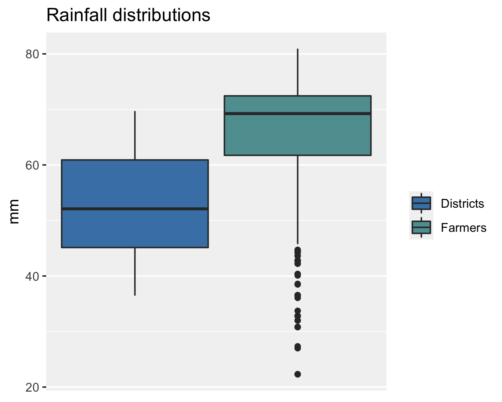
In #1, we use a pipeline to create a new farmer_env
sf (first selecting just the unique uuid and
corresponding x and y), and we pass that to the “y”
argument of terra::extract. The first extract
is done from the raintot raster, the second from the
dists_rs raster. Both extractions are wrapped in
mutate, in order to create two new variables for
farmers_env. Note that we have to specify
terra::extract because it is masked by
dplyr::extract, as geospaar loads
tidyverse after raster (remember section 1.2.2
in Unit 1 Module 2). The resulting sf contains rainfall sum
(over the 28 days) and district numbers for each farmer’s location.
In #2, we first pull out of farmer_env a vector of the
distinct district IDs. Because farmers contains a few bad
coordinates that fall outside of Zambia, and there had NA
values, we inserted drop_na into the pipeline to get rid of
those. We then used farmdistid to filter out the districts
the farmers live in from districts, and used the result to
extract from raintot the mean rainfall from the pixels of
raintot falling within each selected district. When using
terra::extract with polygons, if you don’t pass a value to
the “fun” argument, a list is returned, in which each element contains
the extracted pixel values corresponding to a particular polyon. If you
give “fun” an argument (e.g. mean, as in this case), you
get back a data.frame containing the resulting statistic(s)
for each polygon.
In #3, we do some gymnastics in preparation for setting up
ggplot boxplots (#4) that compare the distributions of
rainfall values. That is, we set up a tibble that binds by row the
extracted district and farmer rainfall values, which allows
ggplot to automatically create side-by-side boxplots using
fill = dat. We create some theme options for
ggplot ahead of that (bp_theme), so that we
can recycle these in the next example. The plot shows that the rainfall
data selected at farmer locations provide a biased estimate of district
mean rainfall.
Random sampling
Alternatively, you might want to draw a random sample directly from a
raster, without all the trials and tribulations of field work (field
logistics often make it hard to capture truly randomized, and thus
representative, samples). raster has functions for this,
and we will build off the previous example to demonstrate them.
# Chunk 41
# #1
farmdistsr <- distsr_rs %in% farmdistid
distsrfarm <- mask(x = distsr_rs, mask = farmdistsr, maskvalue = 0)
# plot_noaxes(distsrfarm)
# #2
set.seed(1)
distsamp <- spatSample(x = distsrfarm, size = nrow(farmers_env),
cells = TRUE, na.rm = TRUE)
randrain <- raintot[distsamp[, 1]]
# #3
set.seed(1)
distsamp_str <- spatSample(x = distsrfarm, method = "stratified",
size = nrow(farmers_env) / length(farmdistid),
cells = TRUE)
stratrandrain <- raintot[distsamp_str[, 1]]
# #4
rand_rain_stats <- bind_rows(
tibble(distrain %>% dplyr::select(rain), dat = "Districts"),
tibble(randrain %>% rename(rain = sum), dat = "Simple"),
tibble(stratrandrain %>% rename(rain = sum), dat = "Stratified")
) %>% drop_na
ggplot(rand_rain_stats) +
geom_boxplot(mapping = aes(y = rain, fill = dat), position = "dodge2") +
scale_fill_manual(values = c("lightblue", "steelblue", "cadetblue")) +
ggtitle("Rainfall distributions") + xlab(NULL) + ylab("mm") +
bp_theme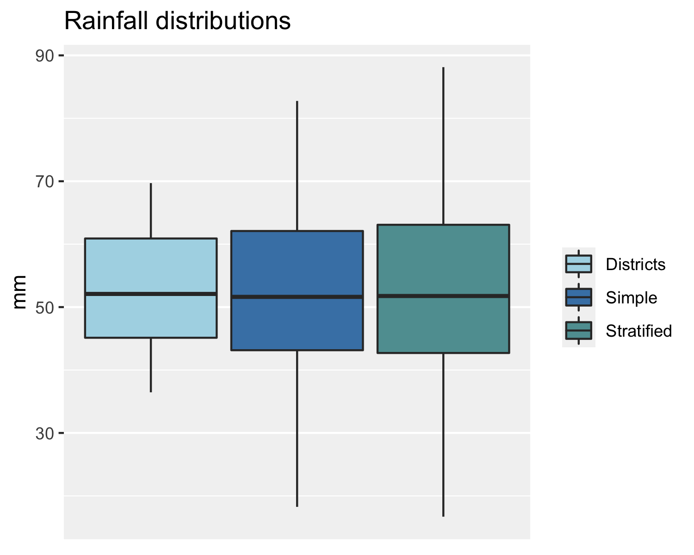
In this case, we first (#1) mask the raster to exclude districts
having no farmers (you can run the commented-out code to see the map).
#2 uses the function terra::spatSample to take a straight
random sample from the farmer-hosting districts. We set the “size”
argument so that it is equal to nrow(farmers_env), i.e. our
sample is equal to the number of farmers in farmers_env
(793). We use the argument cells = TRUE to select the cell
numbers, which is what we are really interested in (if we didn’t, we
would just get the values of those cells, i.e. the district IDs). We
then use those cell ids (the first column of distsamp) to
extract the rainfall values from raintot. We can use the
cell IDs selected from one raster to extract values from another only if
the two rasters have an identical number of cells and extents, as is the
case here. You can confirm that this is the case for
distsrfarm and raintot by running
identical(ncell(raintot), ncell(distsrfarm)) and
ext(raintot) == ext(distsrfarm).
In #3 we apply the more correct way of collecting a representative
sample from units of varying size, which is to stratify the sample by
districts. To do this, we uses the function spatSample
again with “method” set to “stratified”, which uses the district IDs in
distsrfarm to create the strata, and the “size” argument
specifies the size of the sample that should be drawn from each
stratum (i.e. district). To estimate that size, we divide
nrow(farmers_env) by the number of farmer-hosting
districts, so that we end up with a total sample equal to 793. Note that
this function merely ensures that the same sample size is drawn from
each stratum (district), and does not make the sample size in each
stratum proportional to its area.
In #4, we redo the boxplots, showing the results from the two
approaches to random sampling alongside the distribution of district
mean rainfall values (extracted in Chunk 40). Both approaches produce
statistics that are quite representative of the district rainfall. The
stratified approach is closest, as the median aligns more closely with
that of distrain (the boxplot for “Districts” in the
plot).
Practice
Questions
What are two ways of converting a continous to categorical raster?
What are two methods of sampling from a
spatRaster? Are the others (a look interras help files will be informative)?
Code
Use
appto find the standard deviation of rainfall for each cell inchirpsz.Use raster algebra to find the country-wide average standard deviation, and then identify which areas of Zambia have values less than that.
Create a new categorical raster from
raintot, using the quintiles to define the new category boundaries together with the cut method applied toclassify. Useplot_noaxesto show the result.Create a new sub-sample of rasterized districts,
randdistsr, totalling 15 districts randomly selected usingdplyr::sample_n(use a seed of 11) fromdistricts. Useraintotas the rasterization target. Maskraintotso that it is confined to those districts (with NAs values replacing the values in the other districts). Call itnewrandrain.Use
spatSamplewith a size of 300 to get a random sample of rainfall values fromnewrandrain(use a seed of 1), saving the result asrandsamp. UsespatSamplewithcell = TRUEto get a sample of 300 / 15 samples fromranddistsr. Use the cell IDs to extract the rainfall values fromnewrandrain, saving the output vector asstratsamp. Create a tibble that binds these two vectors by row (as in Chunk 41 #4), and then plot the two results as side-by-side boxplots withggplot.
Terrain analysis, interpolation, and modeling
We’ll round out this module with some additional raster-based analyses and a bit of modeling. The code below recreates the objects made during prior section needed for this analysis.
Terrain analysis
We’ll start off this section doing some terrain analysis, with a few little asides on the way to illustrate pixel area and some more plotting skills.
First we need a digital elevation model. The package
geodata (note, you will likely have to install this using
install.packages("geodata")) provides several very nice
functions that allows us to download several different gridded
geographic datasets, which includes DEMs:
# Chunk 42
dem <- geodata::elevation_30s(country = "ZMB", path = tempdir())
plot_noaxes(dem, main = "Zambia DEM", plg = list(title = "meters"))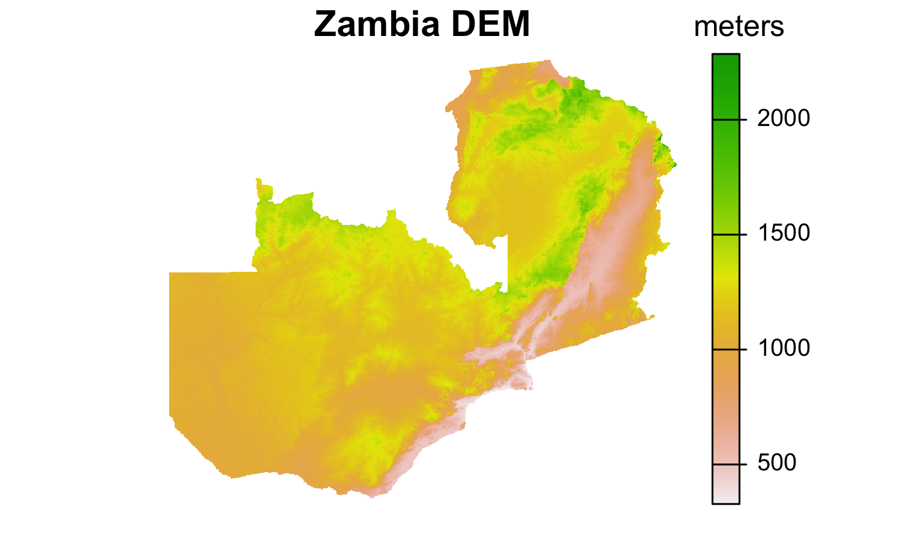
The help file for geodata::elevation_30s tells us the
following datasets are available:
Elevation data for any country. The main data source is Shuttle Radar Topography Mission (SRTM) , specifically the hole-filled CGIAR-SRTM (90 m resolution) from https://srtm.csi.cgiar.org/. These data are only available for latitudes between -60 and 60.
The 1 km (30 arc seconds) data were aggregated from SRTM 90 m resolution data and supplemented with the GTOP30 data for high latitudes (>60 degrees).
There are two other version (..._3s and
..._global), representing different resolutions and
extents, which you can explore further at your leisure. In our example,
we choose the coarser 1 km aggregated version of the SRTM DEM, for ease
of download, and specify that we want it for Zambia.
geodata has functions for many other datasets also.
Pixel resolution/area
The DEM we downloaded is in decimal degrees with a resolution of
0.008333333°, which means the area of each pixel varies through Zambia.
To illustrate that, we use a nice function that terra
provides, which lets you calculate the pixel areas, even when the raster
is in geographic coordinates:
# Chunk 43
demarea <- cellSize(dem, unit = "ha")
plot_noaxes(demarea, plg = list(title = "ha"),
main = paste0("DEM pixel area, mean = ",
round(global(demarea, mean), 1)))
plot(st_geometry(districts), add = TRUE)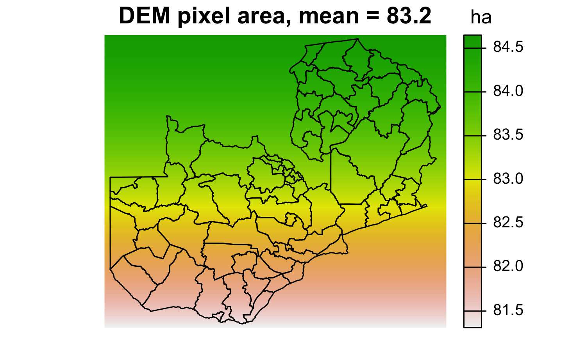
The result is in hectares (as specified in the argument to
cellArea), and you can see that the area of each pixel
falls as the distance from the equator increases (this is why we use
equal area projections to calculate area).
An aside on plot annotation
Although we covered graphics in the previous unit, let’s look a bit
more at plot adornments for a second. Notice in the last two plots how
we use the “plg” argument in plot_noaxes to put a title
over the legend bar.
There are some other things we can do to plots to add symbols to text
within the plots: expression and several other functions
can be used to annotate plots with more complex mathematical
formulae:
# Chunk 44
set.seed(1)
a <- sapply(20:100, function(x) rnorm(n = 100, mean = x, sd = x / 10))
mu <- colMeans(a) # means
mumu <- round(mean(mu), 2) # mean of mean
sdev <- apply(a, 2, sd) # stdevs
musd <- round(mean(sdev), 2) # mean of stdevs
plot(mu, sdev, xlab = expression(mu), ylab = expression(sigma), pch = 20,
main = expression(paste("Mean (", mu, ") versus StDev (", sigma, ")")))
text(x = 20, y = 10, pos = 4,
label = substitute(paste("Overall ", mu, "=", a), list(a = mumu)))
text(x = 20, y = 9, pos = 4,
label = substitute(paste("Overall ", sigma, "=", a), list(a = musd)))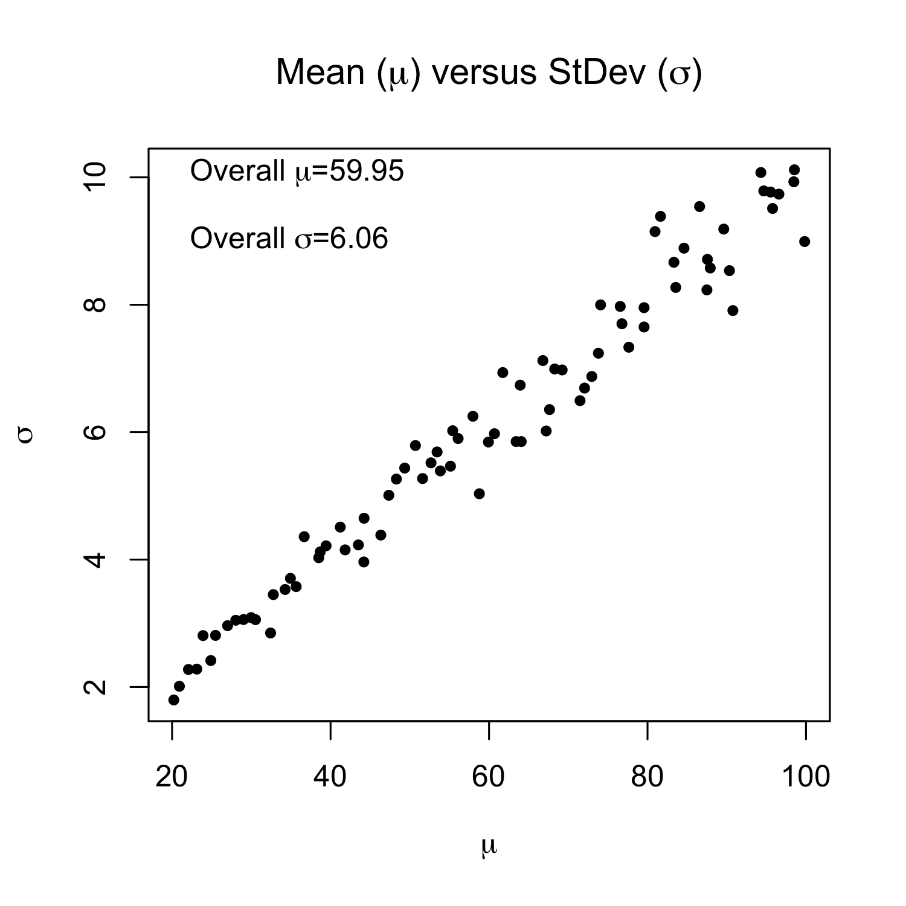
The example above shows how more advanced plot annotations can be done. It also shows that the code can get somewhat complicated; it always takes a ton of time and a number of internet searches to figure out how to do this. We won’t explain this in detail here, but the code provides a template that you can hack at if you want to get fancy with labelling your plots.
Basic terrain variables
terra::terrain allows us to calculate five different
terrain variables, four of which we show below:
# Chunk 45
# #1
zamr <- rast(x = ext(districts), crs = crs(districts), res = res(dem))
values(zamr) <- 1:ncell(zamr)
zamr_alb <- project(x = zamr, y = crs(roads), res = 1000, method = "near")
demalb <- project(x = dem, y = zamr_alb) # default is bilinear
# #2
# slope <- terrain(x = demalb, v = 'slope', unit = 'degrees') # slope
# aspect <- terrain(x = demalb, v = 'aspect', unit = 'degrees') # aspect
# flowdir <- terrain(x = demalb, v = 'flowdir') # flow direction
# tri <- terrain(x = demalb, v = 'TRI') # topographic roughness index
vars <- c("slope", "aspect", "flowdir", "TRI")
terrvars <- lapply(1:length(vars), function(x) {
tv <- terrain(x = demalb, v = vars[x], unit = "degrees")
}) %>% do.call(c, .)
names(terrvars) <- vars
plot_noaxes(terrvars)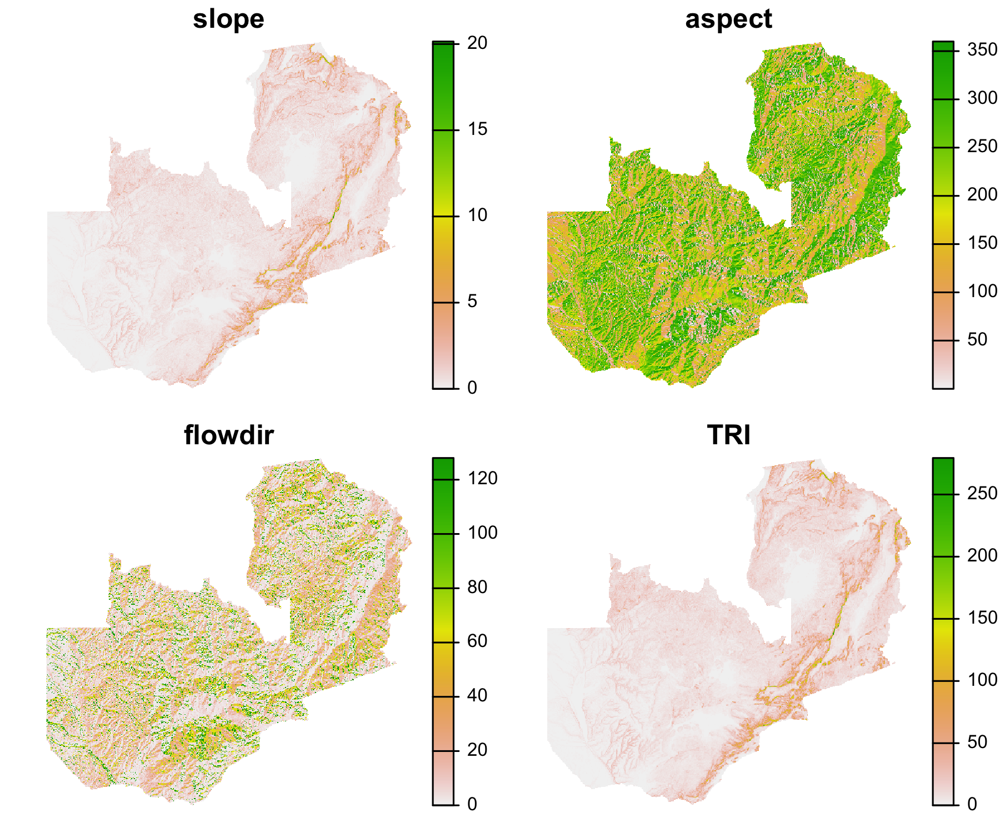
We place the DEM in a projected coordinate system for
terrain, although they could be in a planar system,
provided elevation is given in m, per the help file: > Compute
terrain characteristics from elevation data. The elevation values should
be in the same units as the map units (typically meter) for projected
(planar) raster data. They should be in meter when the coordinate
reference system is longitude/latitude.
So we create (#1) a 1 km projected version of the DEM, allowing the default bilinear interpolation to do its work during reprojection.
In #2 we calculate slope, aspect, flow direction, and the topographic
ruggedness index. The commented out code illustrates how each of these
variables can be calculated separately, although we prefer to do the job
using lapply. Note that in the lapply we pass
the “unit” argument into the calculation of all four variables, even
though it only is used for slope and aspect; this is fine, because
terrain simply ignores the argument value in calculating
flow direction or TRI.
NOTE: This vignette will be updated from raster
to terra
Interpolation
Interpolating between point values is a fairly common GIS analysis.
The interpolate function of raster allows you to do this
using a number of different types of models, such as kriging and inverse
distance weighting. We are going to demonstrate both approaches, drawing
on functions provided by the gstat package (please install
it):
# Chunk 46
# install.packages("gstat")
library(gstat)
# #1
raintotalb <- project(x = raintot, y = crs(roads), res = 5000)
names(raintotalb) <- "rain"
r <- rast(ext(raintotalb), res = res(raintotalb),
crs = crs(raintotalb), vals = 1)
# #2
set.seed(1)
rainsamp <- spatSample(raintotalb, size = 1000, xy = TRUE, na.rm = TRUE)
# head(rainsamp)
# #3
invdist <- gstat(id = "rain", formula = rain ~ 1, locations = ~x + y,
data = rainsamp)
invdistr <- interpolate(object = r, model = invdist, )
invdistrmsk <- mask(x = invdistr[[1]], mask = raintotalb)
# #4
v <- variogram(object = rain ~ 1, locations = ~x+y, data = rainsamp) # a
m <- fit.variogram(object = v, model = vgm("Sph")) # b
m
#> model psill range
#> 1 Nug 17.0908 0.0
#> 2 Sph 368.3253 432917.4
plot(variogramLine(m, max(v[, 2])), type = "l") # c
points(v[, 2:3], pch = 20) # d
legend("bottomright", legend = c("variogram fit", "variogram"),
lty = c(1, NA), pch = c(NA, 20), bty = "n") # e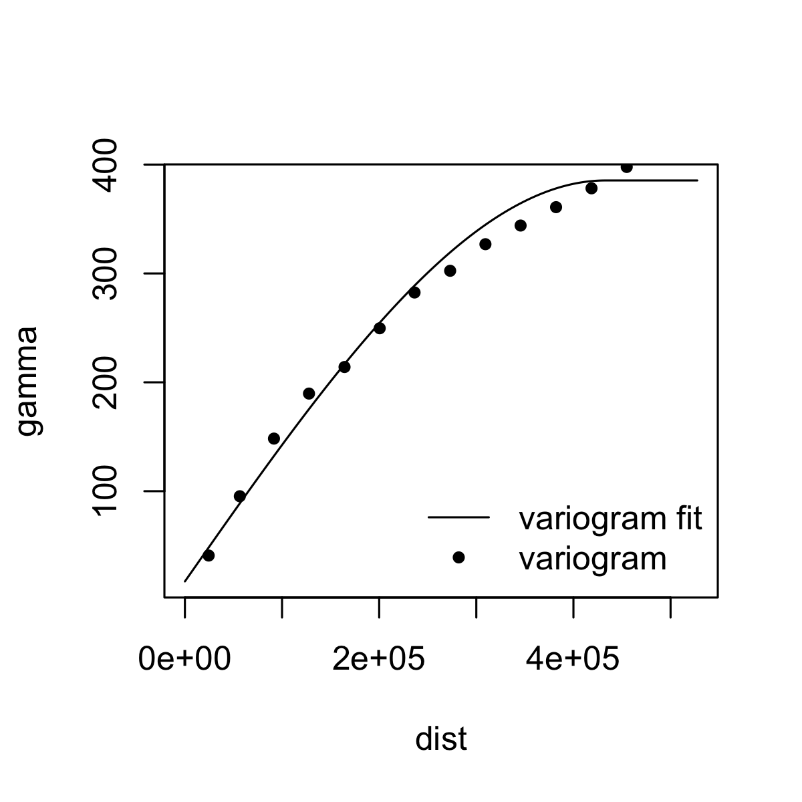
# #5
ordkrig <- gstat(id = "rain", formula = rain ~ 1, data = rainsamp,
locations = ~x+y, model = m)
ordkrigr <- interpolate(object = r, model = ordkrig)
ordkrigrmsk <- mask(x = ordkrigr[[1]], mask = raintotalb)
raininterp <- c(list(raintotalb, invdistrmsk, ordkrigrmsk))
titles <- c("Actual rain", "IDW rain", "Kriged rain")
par(mfrow = c(2, 2), mar = c(0, 0, 1, 0))
plot(st_as_sf(rainsamp, coords = c("x", "y"))$geometry, pch = 20, cex = 0.5)
for(i in 1:3) plot_noaxes(raininterp[[i]], main = titles[i])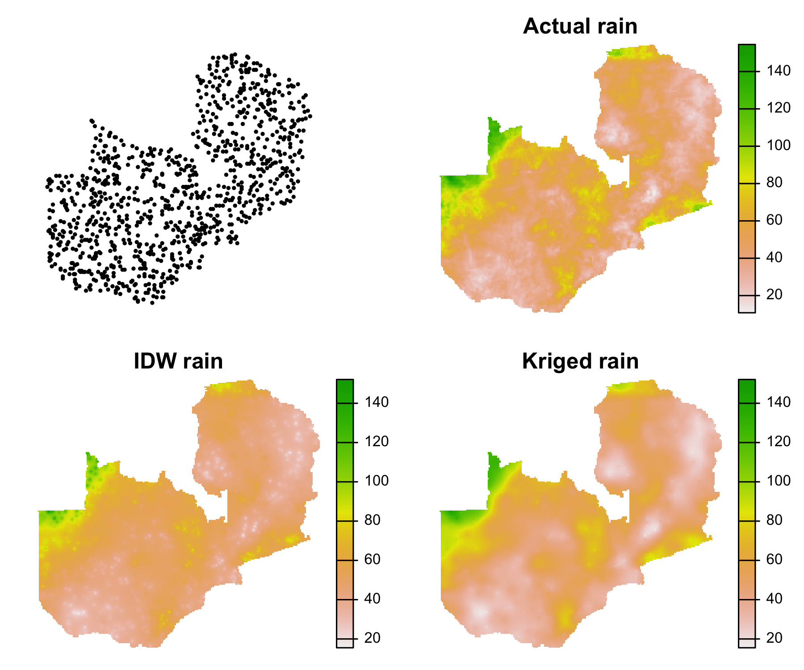
This example is reasonably complex, both conceptually and with respect to code. We will refer you to other, non-R literature to explain how interpolation and kriging work, and confine our explanations to the code.
Block #1 creates an Albers projected version of raintot
(which is roughly 5 km on a side), and sets up a dummy raster
(r) that will be our interpolation target, i.e. it provides
the spatial parameters we want our prediction surface to have. #2 then
draws a random sample from across the reprojected rainfall raster,
providing a set of point observations of rainfall. #3 runs the code for
an inverse distance weighted (IDW) interpolation (each cell between the
sample points is given a new value that is the weighted mean of the
rainfall values collected at the points nearest to it; the weight is
determined by the distance to each point). The interpolation model is
set up by the gstat function, using the coordinates x and y
as the locations. terra::interpolate takes the model and
applies it to r, making the new invdistr
raster, which we then mask to the outline of Zambia
(invdistrmsk), selecting just the first layer which
provides the predicted value.
In #4, we provide the initial steps for implementing ordinary kriging. Line a calculates the variogram, which measures the spatial autocorrelation between rainfall values. Line b fits a spherical variogram model. Lines c-e plot the variogram (changes in semivariances with distance) and the spherical model we fit to estimate that semivariance.
Block #5 takes the fitted variogram model (m) and uses
that to create the rainfall surface. The steps in this block are
basically the same as in #3, except that we use the kriging model.
Distance
If you want to calculate how far any point on a grid is from a
particular point or points, raster offers a few functions
for finding euclidean distances:
# Chunk 47
# #1
set.seed(1)
randsamp <- spatSample(raintotalb, size = 10, xy = TRUE, na.rm = TRUE) %>%
st_as_sf(coords = c("x", "y"), crs = st_crs(roads))
# #2
ptdistr <- distance(x = raintotalb, y = randsamp)
ptdistrmsk <- mask(ptdistr, raintotalb)
# #3
randsampr <- rasterize(randsamp, y = raintotalb)
ptdistr2 <- distance(randsampr)
ptdistrmsk2 <- mask(ptdistr2, raintotalb)
s <- c(ptdistrmsk, ptdistrmsk2) / 1000
names(s) <- c("distanceFromPoints", "distance")
par(mfrow = c(1, 2), oma = c(0, 0, 0, 1))
for(i in 1:nlyr(s)) {
plot_noaxes(s[[i]], main = names(s)[i])
plot(st_geometry(randsamp), pch = 20, cex = 0.5, add = TRUE)
}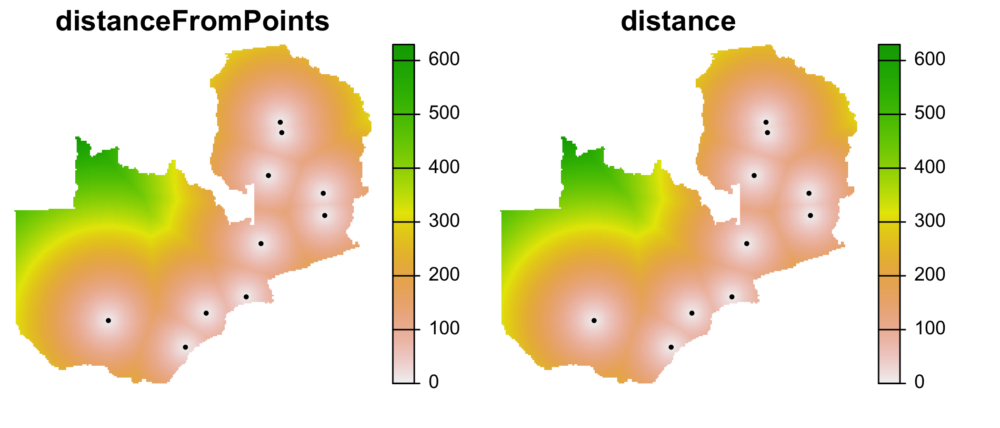
In #1, we draw 10 randomly selected points from
raintotalb and create an sf objects called
randsamp. Here we are interested just in the spatial
locations, not the values.
In #2, we use the distance function to find how far any
given point in an input raster (raintotalb) is from the xy
locations contained in randsamp. raintotalb
serves here simply to provide the dimensions of the raster surface from
which we want to calculate distance values. We mask the resulting
distance surface (ptdistr) to confine the results to
Zambia’s borders.
Block #3 does pretty much the same thing, but in this case we use the
distance function applied to the rasterized points (where
the only cells having values are the cells underlying the points that
were rasterized–the rest are NA) and calculates the distances from every
other cell (the NA values) to the nearest rasterized point having a
non-NA value.
The plot shows that the two approaches produce identical results.
Beyond this, there are more sophisticated distance analyses that can
be done, such as cost distance analysis, which are provided by the
package gdistance.
Model prediction
Although there are many, many more analyses and capabilities we could illustrate with rasters, we will end this section with a relatively simple modeling example. In this, we will use ordinary linear regression to try model rainfall values collected at point locations, based on their correlations with certain predictors.
First, we will use geodata::worldclim_country to
download the past of Worldclim’s global precipitation layer (at a
resolution of 2.5 minutes of a degree) for the extent of Zambia, then
sum the resulting cropped monthly values into a single annual value,
mask the result to Zambia’s districts.
# Chunk 48
wcprec <- geodata::worldclim_country(var = "prec", res = 2.5,
country = "Zambia", path = tempdir())
zamprec <- mask(app(wcprec, sum), districts)After doing that (and rebuilding geospaar), we can do
our analysis, loading in the zamprec data as we need
it.
# Chunk 49
# #1
zamprecalb <- project(x = zamprec, y = raintotalb)
names(zamprecalb) <- "rain"
elev <- resample(aggregate(x = demalb, fact = 5), y = raintotalb)
# #2
set.seed(1)
pts <- spatSample(x = zamprecalb, size = 500, xy = TRUE, na.rm = TRUE) %>%
st_as_sf(coords = c("x", "y"), crs = st_crs(roads)) %>%
mutate(elev = raster::extract(x = elev, y = .)[[2]]) %>%
drop_na
pts_dat <- bind_cols(st_drop_geometry(pts), st_coordinates(pts)) %>%
tibble()
# #3
p1 <- ggplot(pts_dat) +
geom_point(aes(X, rain), col = "steelblue") +
ylab("Rainfall (mm)")
p2 <- ggplot(pts_dat) + geom_point(aes(Y, rain), col = "blue2") + ylab("")
p3 <- ggplot(pts_dat) + geom_point(aes(elev, rain), col = "darkblue") + ylab("")
cowplot::plot_grid(p1, p2, p3, nrow = 1)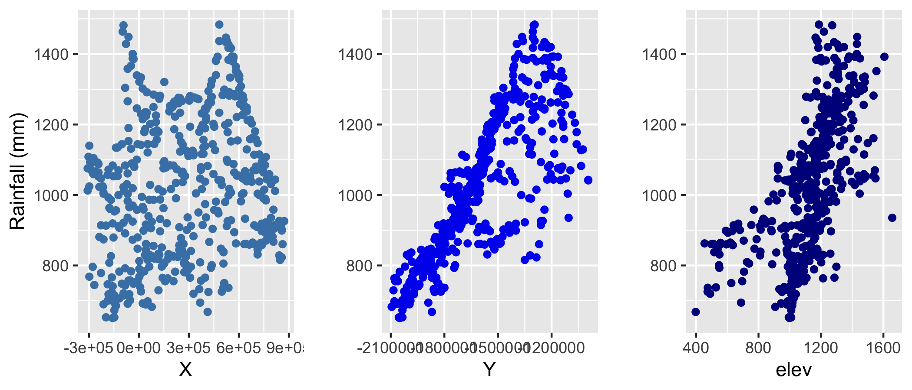
# #4
rain_lm <- lm(rain ~ X + Y + elev, data = pts_dat)
summary(rain_lm)
#> Call:
#> lm(formula = rain ~ X + Y + elev, data = pts_dat)
#>
#> Residuals:
#> Min 1Q Median 3Q Max
#> -327.32 -47.98 2.91 43.19 251.15
#>
#> Coefficients:
#> Estimate Std. Error t value Pr(>|t|)
#> (Intercept) 1.779e+03 4.881e+01 36.457 < 2e-16 ***
#> X -9.598e-05 1.546e-05 -6.206 1.18e-09 ***
#> Y 6.103e-04 1.969e-05 30.989 < 2e-16 ***
#> elev 1.910e-01 2.042e-02 9.352 < 2e-16 ***
#> ---
#> Signif. codes: 0 ‘***’ 0.001 ‘**’ 0.01 ‘*’ 0.05 ‘.’ 0.1 ‘ ’ 1
#>
#> Residual standard error: 85.99 on 477 degrees of freedom
#> Multiple R-squared: 0.7909, Adjusted R-squared: 0.7896
#> F-statistic: 601.3 on 3 and 477 DF, p-value: < 2.2e-16
# #5
xs <- xFromCell(object = raintotalb, cell = 1:ncell(raintotalb))
ys <- yFromCell(object = raintotalb, cell = 1:ncell(raintotalb))
X <- Y <- raintotalb
values(X) <- xs
values(Y) <- ys
# #6
predst <- c(X, Y, elev)
names(predst) <- c("X", "Y", "elev")
predrainr <- predict(object = predst, model = rain_lm)
# #7
s <- c(zamprecalb, predrainr, (predrainr - zamprecalb) / zamprecalb * 100)
mae <- round(global(abs(zamprecalb - predrainr), mean, na.rm = TRUE), 1)
pnames <- c("'Observed' Rainfall", "Predicted Rainfall", "% Difference")
par(mfrow = c(1, 3), mar = c(0, 0, 1, 4))
for(i in 1:3) {
plot_noaxes(s[[i]], main = pnames[i])
if(i %in% 1:2) {
pts %>% st_geometry %>%
plot(pch = 20, cex = 0.2, col = "grey70", add = TRUE)
} else {
mtext(side = 1, line = -3, cex = 0.8,
text = paste("Mean abs err =", mae, "mm"))
}
}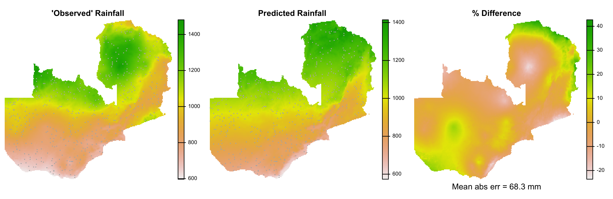
This example demonstrates a very crude model that uses elevation, latitude, and longitude to predict the mean annual rainfall for Zambia. This is not really how you would want to go about predicting rainfall, but the point here is to show how you can combine statistical models with spatial data to make prediction maps. Despite the crudeness, the model more or less captures the spatial pattern of rainfall.
Let’s examine the code a bit:
Block #1 projects the zamprec layer to Albers and to the
same 5 km resolution as raintotalb (using bilinear
interpolation), and then aggregates and resamples demalb to
that same resolution/extent (calling it elev).
Block #2 selects 500 points at random from zamprecalb,
which gives a sample of rainfall values from that raster. We then use
the same points to extract elevation values from elev, and
convert all that to an ordinary tibble (rather than an
sf object) that contains rainfall, elevation, X coordinate
(longitude), and Y coordinate (latitude) values for each point
location.
Block #3 plots X, Y, and elev against rainfall to see if there are any obvious correlations. It seems pretty clear that rainfall increases with both elevation and latitude (note that there is a also a correlation between latitude and elevation, which we choose to ignore here in violation of regression assumptions), and a weak to perhaps non-existent connection between longitude and rainfall.
In #4, we use lm to fit a multiple regression model, in
which X, Y, and elev are used to predict
rainfall. The summary of the model rain_lm
shows that the model explains about 75% of the variance in rainfall
using those three predictors, and that all predictors are significant
(with X having the least influence).
In #5, we set about creating gridded versions of X and
Y, which we need to do if we want to make a prediction map. We
use the raster helper functions xFromCell and
yFromCell to get the x and y coordinates for all cell
numbers in raintotalb (our target raster). We populate new
rasters X and Y with the extracted coordinate
values.
Block #6 sets up a stack that has all the predictor grids, which,
importantly, have the same names as the predictor variables used in the
lm (X, Y, and elev). That is
necessary to prevent a failure in running the last line, which uses the
generic predict function (this one designed to work for
rasters) to apply the model coefficients to the spatial predictors, and
create the predicted rainfall surface. If the variables in the input
stack of spatial predictors don’t match the predictor variable names in
the model object, the function will fail.
We plot three maps in #7 for comparison: the “actual” rainfall (the
scare quotes are there because the WorldClim dataset is itself the
result of a fair bit of modeling), the new lm-predicted
surface, and then a map of the differences between the two layers,
expressed as a percent difference relative to the values of
zamprecalb. The mean absolute error (in mm) is printed onto
the map, using the mtext function.
So that’s about it for this module.
Practice
Questions
How do we estimate the pixel area of rasters when they are in non-projected coordinate systems?
How can you add mathematical symbols and other special characters (e.g. superscripts) to graphics?
When you want to apply a fitted model to a multi-layer raster (e.g.
pred_stackthat provide the model predictor layers, what do we have to remember to do withnames(pred_stack)?
Code
Crop
demalbdown to the extent of district 42 (bear in mind thatdistrictsneeds to be in the same projection asdemalb, so transform it first). Then calculate slope, aspect, and TPI on the cropped DEM. Plot the results so that they appear in 3 side by side panels.Using the code in Chunk 46 blocks #1-#3 as your template, re-create IDW interpolations using the original 1000 randomly sampled points. Then create two new ones based on 1) 500 and 2) 250 randomly selected points (use the same seed). Stacking the results in this order:
raintotalb, the 1000 point IDW, the 500 point IDW, and the 250 IDW. Plot these in a single call toplot_noaxes, settingzlim = c(0, 150)and passing informative titles to the “main” argument (e.g. “CHIRPS”, “1000 pt IDW”, “500 pt IDW”, etc). There are two ways of doing this: i) the hard way, by copying, pasting, and changing code blocks #2 and #3 for each version of the IDW; ii) the programmatic way, by creating the three IDWs in anlapply. Note: if you choose the elegant way, to make the stack, you will either need toc(raintotalb, idw_list)orc(raintotalb, c(idw_list))stack the list of three idws, and then stack that withraintotalb.Select (
filter) districts 15, 20, 25, 30, 35, 40, 45, and 50 out ofdistricts. Convert the resulting subset of districts to Albers projection, and then extract the centroids of those districts. Usingraintotalbas your target, usedistanceto calculate the distances from any point in Zambia to the centroids of those selected districts. Mask the result (you can useraintotalbagain for the mask target) and plot it usingplot_noaxes.Redo the code in Chunk 49, but use a new random draw of just 25 points to collect the predictors (ref. #2). How much more poorly does this model do than the one with denser observations?
Unit assignment
Set-up
Make sure you are working in the main branch of your project (you should not be working on the a4 branch). Create a new vignette named “unit2-module2.Rmd”. You will use this to document the tasks you undertake for this assignment.
There are no package functions to create for this assignment. All work is to be done in the vignette.
Vignette tasks
Create a subset of
districtsby extracting districts 22, 26, 53, and 54. Call itdistricts_ss. Use the extent ofdistricts_ss(ext(districts_ss)) to define the extent of a new rasterr, which should have a resolution of 0.1°. Useras a template for creating two new rasters,rsampandrrandn.rsampshould be filled with randomly selected integers ranging between 10 and 50.rrandnshould be filled with random numbers drawn from a normal distribution (rnorm) that has a mean of 30 and standard deviation of 5. Use a seed of 1 inset.seed. Stackrsampandrrandn(name the stacks), mask that bydistricts_ss, and plotsusingplot_noaxes. (Ref: Chunks 1, 3, 4, 16)Disaggregate
s[[1]]to a resolution of 0.025°, using bilinear interpolation, calling the results2_1d. Select all areas ofs2_1dthat have values > 35, creating a new rasters2_1gt35. Set the values ofs2_1gt35that equal 0 to NA. Then convert the resulting raster into ansfobject calleds2poly. Plot the resulting polygons overs2_1d. (Ref: Chunks 10, 22, 37)Create a new grid from the extent of
districtsthat has a resolution of 0.5° (call itzamr), assigning all cells a value of 1. Then recreate thefarmersrdataset–a raster that sums the number of farmers falling within each grid cell. Mask the results usingdistricts, and then plot the result onto a grey background of Zambia. (Ref: Chunk 8, 37)Convert the rasterized farmers counts (
farmersr) back into ansfpoints objectfarmersrpts. Create a new version ofzamrat 0.05°, and then calculate the distance between these points and every other location in Zambia, creating an output grid of distances, calleddist_to_farmers, which you mask bydistricts. Plotdist_to_farmersin kilometers (i.e. divide it by 1000) usingplot_no_axes, withfarmersrptsoverlaid as black solid circles. (Ref: Chunks 8, 10, 47)Use
geodata’sworldclim_countryfunction to grab WorldClim’s mean temperature (“tavg”) dataset at a resolution of 2.5 (note this is not degrees, but minutes of a degree), and download it to somewhere on your local disk. That will give aSpatRasterwith 12 layers, with each layer representing the average monthly temperature for each grid cell on the planet. Calculate the annual mean temperature for each cell, and then mask the result usingdistrictsto get your final raster,zamtmean. Plot the result. (Ref: Chunk 17, 48)-
Classify the temperature data into three categories, low, medium, and high, using <20°, 20-24°, and >24° as the break points for determining the classes. Use the
reclassifyfunction with a reclassification matrix, which you should do like this:trng <- global(zamtmean, range, na.rm = TRUE) reclmat <- cbind(c(floor(trng[1]), 20, 24), c(20, 24, ceiling(trng[2])), 1:3)Here
globalis helping to find the values of tmin and tmax, which respectively define the lower bound of the “low” class and the upper bound of the “high” class. What are the functionsfloorandceilingdoing (answer this in your vignette)? Call the reclassified temperature rasterzamtclass. Make the map usingplot_noaxeswith a categorical legend, and using the colors “blue”, “yellow2”, and “red” for the three classes. (Ref: Chunk 26, 39) Recreate the
zamprecdataset (chunk 48), then calculate the mean precipitation within each temperature zone defined byzamtclass. Call the resulting matrixz. Map the mean zonal precipitation values inzonto each temperature zone (using thesubstfunction withzamtclassas the target; remember thatzonalreturns a matrix, and thatsubstrequires equal length vector for the “from” and “to” values. Call the new rasterzamprecz, and then plot it usingplot_noaxes, with a custom legend (as done in Task 6), using the rounded zonal mean values (rounded) as the legend labels (legend = round(z$mean)). Use colors “yellow2”, “green3”, and “blue” for the three classes (Ref: Chunks 32, 33, 39)Use
geodata::elevation_30sagain to download the elevation raster for Zambia (call itdem). Aggregate it to the same resolution aschirps, using the default mean aggregation, and mask it usingdistricts. Call thatdem5. Useterrainto calculate aspect fromdem5(call itaspect), selecting degrees as the output value. Then find all west-facing aspects (aspects >247.5 and <292.5), and all east facing aspects (>67.5 and <112.5), making new rasters respectively namedwestandeast, e.g.west <- aspect > 247.5 & aspect < 292.5). Stack these together withaspectand make a three-panel plot withplot_noaxeswith titles “Aspect”, “West”, and “East”. (Ref: Chunks 37, 42)-
Using a random seed of 1, create two random samples of 100 each. The first one should be collected from within the west-facing cells (i.e. only be drawn from cells in
westthat have a cell of one), and the second from east-facing cells. To do this, set the cells equal to 0 ineastandwestto NA (e.g.west[west == 0] <- NA). Once you have collected those, convert the resulting objects tosf, and use those two sets of points to extract temperature values fromzamtmeaninto a tibbletemp_stats, which is going to look this:temp_stats <- bind_rows( tibble(temp = terra::extract(zamtmean, westpts)$mean, dat = "West"), tibble(temp = terra::extract(zamtmean, eastpts)$mean, dat = "East") )Then use
temp_statswithggplotto make side-by-side boxplots to compare the distributions of west and east facing temperatures, modeled on the example in Chunk 40 #4. (Ref: Chunks 37, 40) -
Extra credit worth (5 points). Extract the centroids from each district in
districts(call itdcent), and reproject the points to Albers, using thest_crs(roads). Reprojectzamtmeanto Albers also, making the new resolution (5 km, i.e. 5000 m), using bilinear interpolation (call itzamtmeanalb). Then usedcentto extract the temperature values fromzamtmeanalb(add the values todcentas a new variable “temp” usingmutate). Usegstatto create an IDW model (call itidw). To make the IDW work, which isn’tsfcompliant, some extra work will be required, as shown below (this is the step needed after the extract of temperature values)dcent <- bind_cols( dcent %>% data.frame %>% dplyr::select(-geometry) %>% as_tibble, st_coordinates(dcent) %>% as_tibble ) %>% rename(x = X, y = Y)This yields a
tibblewith columns x and y that are needed bygstat. After runninggstat, map the interpolated temperatures usingzamtmeanalbas a target object (it won’t be overwritten) andidwas the model. Make sure you mask the result to the boundaries of Zambia, usingzamtmeanalbas the mask. Call the new interpolated, masked gridzamtidw. Plot the result side by side withzamtmeanalbfor comparison usingplot_noaxeswith titles “Real Temperature” and “IDW Temperature”. (Refs: Chunks 46, 49)
Assignment output
Refer to Unit 1 Module 4’s assignment output section for submission instructions. The only differences are as follows:
- Your submission should be on a new side branch “a5”;
- You should increment your package version number by 1 on the lowest number (e.g. from 0.0.2 to 0.0.3) in the DESCRIPTION;
- Do not worry about #3 in those instructions